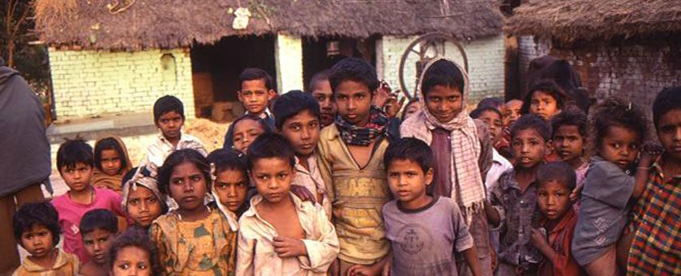
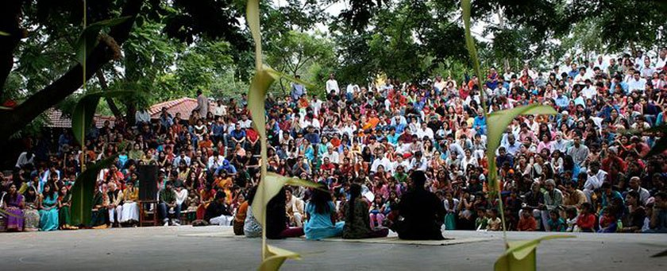

There are many parents who feel a deep dissatisfaction with the schooling that their children are receiving. Some wonder why their child has such a low level of achievement, and are concerned when they see various learning difficulties developing. Others, when they see children exhibiting strong emotional and behavioral problems, suspect the school environment is seriously damaging their child's well-being.
There are very genuine reasons for concern. Class sizes can be huge; teachers are under pressure from many directions and they are often too preoccupied with their own problems and ambitions to be concerned with the needs and difficulties of the children supposedly in their care. Also, teachers have absorbed the worldwide ethos that their job is merely to impart knowledge to the student, and to facilitate the passing of exams for those judged capable, the prestige-gaining high-performers. The children who are considered less able academically are often more or less ignored. And wider considerations about the whole development of the student, and his or her general well-being, are simply none of the teacher's concern.
In our present education system, conformity is so highly valued that initiative and creativity are mostly destroyed, perhaps forever. In the intensely competitive environment, with vast amounts of school work to take home, there is little time for play; for the simple activities and pursuits of childhood, which are so essential if a child is to grow up healthily, sanely.
For so many reasons, school is often a desensitizing, even brutal, often deeply hurtful experience and parents are quite right to feel disturbed when they see the signs of deterioration in their offspring. Many children develop a deep distaste for school, which may continue to affect their ability to learn throughout their lives. Increasing numbers of schools are becoming hotbeds of drug dealing, places where drinking, smoking and other vices are picked up. Violence is rife, bullying is an everyday occurrence, making children's lives a misery. Some find solace in identifying with gangs, isolating themselves from their families and society, and perhaps engaging in antisocial behavior.
So what can parents do, faced with all this, seeing their children suffering and corrupted; perhaps even developing physical illness in a psychosomatic response to the unavoidable pressures they face at school? What is the right action when one sees all kinds of learning difficulties develop in one's children, or seeing how they are becoming callous, insensitive, lacking in right values? Some parents are concerned enough to look around for a different sort of school, and some are lucky enough to find one. But real alternatives are rare. Often having changed schools in response to extravagant claims of a "caring", "child-centred", "holistic" education, the words are quickly revealed as so much hype. Or if a more humane school is discovered, it is so far away as to make attendance a very difficult business.
What is to be done? If parents accept that they are totally responsible for the well-being of their children, if they deeply care for them, what action can they take when they see the effects the education system is having on them? An increasingly common response among parents in the West is to withdraw their children from school and educate them at home. Or not send them to school in the first place. The purpose of this article is to ask the reader if this is an option you could consider.
I'm not qualified enough to do this.
I may damage or disadvantage the child.
The children would not have enough socialization.
What if they wanted to go to University?
Would the children be able to learn enough skills at home?
I wouldn't have enough time to do it.
I just wouldn't know what to do.
Obviously to educate a child at home is an enormous step and undoubtedly represents a huge commitment. If it is contemplated at all, several fears may arise, such as:
All these appear to be serious concerns, and in an article like this they can be dealt with only briefly. But before we even begin to investigate them, I would ask the reader to consider the origins of these fears. From where does such thinking arise? I think that a major problem is that we ourselves have been through the school system and it has strongly conditioned our minds. We have absorbed a very limited concept of what education is about. I was reading a letter recently from a lady contemplating home education who said "I wouldn't know how to make the children sit down and learn" - as if learning can only take place when sitting! Similarly we have been fooled into accepting the myth that only qualified professionals can teach. Nothing is further from the truth. An important part of the home-educating process (indeed for the writer an essential component) is exploring if we and our children can free ourselves from such limited thinking, if we can put aside our preconceptions of how learning should be.
In reality the fears listed are mere speculation. Do you actually know what would happen if you took this step? One thing I can assure the reader is that the unexpected will happen. Freed from the straight jacket of the school, new qualities, new expressions, new interests, new skills, new perspectives will open up in the child (and hopefully in the parents). Many parents who have taken this plunge have been amazed to see the transformation in their children - a transformation which can flow into the whole family. As a great exponent of home education, John Holt once wrote:
"For many, the deepest and most abiding benefit of home schooling is the claiming (or reclaiming) of their family. Home schooling families spend incredible amounts of time together living, learning and playing. They have the opportunity to develop a depth of understanding and a commitment to the family that is difficult to attain when family members spend their days going in separate directions".
Given the space, the freedom, learning comes naturally to children - they don't have to be forced into it but so often, with their emphasis on punishment and reward, with a system more or less based on fear, schools manage to pervert this love of learning. Consider these words of Albert Einstein:
"It is, in fact, nothing short of a miracle that the modern methods of instruction have not yet entirely strangled the holy curiosity of inquiry; for this delicate little plant, aside from stimulation, stands mainly in need of freedom; without this it goes to wrack and ruin without fail. It is a very grave mistake to think that the enjoyment of seeing and searching can be promoted by means of coercion and a sense of duty. To the contrary, I believe that it would be possible to rob even a healthy beast of prey of its voraciousness, if it were possible, with the aid of a whip, to force the beast to devour continuously, even when not hungry".
Incidentally, Einstein himself was the product of home education. As were many famous, creative people, including Alexander Bell, Thomas Edison, the Wright Brothers, Pascal, Pierre Curie, Winston Churchill, Benjamin Franklin, Yehudi Menuhin, Agatha Christie, George Bernard Shaw, Charles Dickens, Mark Twain, Charlie Chaplin, Albert Schweitzer, Franklin Roosevelt. And there are many who failed at school only to become outstanding successes in their fields.
Returning to the commonly held apprehensions about home educating (which are really misapprehensions) the issue of socialisation needs to be considered. A very common response from people, when they learn one's children are home educated, is something like: "Don't they miss out on the valuable social life of the school? Don't they become isolated?” Again I will use the words of John Holt
"If there was no other reason for wanting to keep kids out of school, the social life would be reason enough. In all but a very few of the schools I have taught in, or know anything about, the social life of the children is mean-spirited, competitive, exclusive, status-seeking, snobbish, who is talking to so-and-so and who is not. Even in the first grade, classes soon divide up into leaders, their bands of followers and other outsiders who are pointedly excluded from the group."
Home education does not imply social isolation, far from it - social horizons can be far wider than in school. There are many opportunities for healthy social contact (and far more time) both within the family and in pursuing activities outside. In my experience home educated children are far less likely to become social misfits; in fact they are usually cooperative and helpful. And from meeting the world from a secure base they tend to be self-confident. Good home educating does not isolate itself from the community, in fact interacting with it becomes part of education. Also, hopefully one can find similar families in the neighbourhood. Groups can form, which encourages others to consider the home educating option. The potential for development in this area is enormous (please see the end of the article for suggestions).
Much depends on the parent having the courage to allow the space for new things to happen, and not merely to substitute the pressures of the school with their own pressures. One common consequence of allowing that space is that initiative and creativity are released in the child, which are extremely important characteristics. Children start to become self-reliant, directing their own learning and taking a very real interest in things around them (not necessarily reflecting the parents' interests!). And for those parents who are concerned about their children's employment prospects, I point out (and I have heard this from employers themselves) initiative and creativity are very marketable traits indeed.
Children start, perhaps unconsciously, to find out what it is they love to do in this life. And surely it is only when people have discovered this that they can live happy and fulfilled lives?
Here are some comments from parents who found the courage to home educate :
"Let me tell you what happened to our son after we removed him from a local public school's first grade last November. He stopped wetting his bed. He stopped suffering from daily stomach upsets and headaches and he has not had a cold for six months, although he averaged one cold a month while attending school. He has gained five pounds and has grown almost two inches. And he is HAPPY! ........"
"The changes that have occurred in Ishmael since we took him out of school have been unbelievable. Gone are the fits of temper that erupted every day around 4pm, gone are the headaches, the lines of tension around his mouth, and gone is his depression....."
"As soon as the decision was taken [to home educate] he seemed to be released from some terrible burden, he immediately began to take charge of his own life and learning, began to approach everything with the zest and enthusiasm formerly reserved for his own nature study, sports and building projects. For example, he always hated maths, and the necessity of doing maths homework caused the most unhappy and miserable hours in our household. Now he has set himself the task of getting maths and is proceeding to do so with none of the emotional overtones formerly present........"
Apart from these individual testimonials, is there any solid evidence that home educating works? Well, recent statistics indicate that more than two million students in the USA are home educated. And considering only academic results, in 1997 the results of numerous independent evaluations were published which showed that home educated students scored as many as 30 percentile points higher than national public school averages on a Comprehensive Test of Basic Skills. After presenting similar statistics showing that home school children out scored public school children in every subject, Dr Brian Ray concluded: "...home schooling works. Even many of the State Departments of Education, which are generally biased towards the public school system, cannot argue with these facts."
And for those parents who feel they are insufficiently skilled or qualified to take on home education here is an interesting fact: Dr. Ray found no statistical differences in academic achievement of home schooled students taught by parents with less formal education than those students taught by parents with higher formal education. But if parents still feel apprehensive about academic qualifications and future entry into higher education, a very real alternative exists in India, well suited to the needs of home education. This is India's National Open School. For more information see
In any case, in home educating, a great part of the children's learning, perhaps the most important part, is probably not going to come from a curriculum, or even from the parents necessarily. Instead it will come from themselves, from their interactions with the world around them, from their own unique interests and talents, which will be revealed much more readily when there is freedom from the classroom. Please realise you don't need to know everything they want to know, or be interested in everything they are interested in. In many ways the question "what will I actually do with them" is a wrong question. Taking them out of school is the greatest positive action, and what you need to do further will be revealed as things unfold. Your job is to facilitate their learning, rather than to teach them. You will be able to respond to their true educational needs in a way that is impossible in a classroom.
I said above that it is a myth that only teachers can teach. I think any well intentioned adult can teach the basics, reading, writing, mathematics. And if there are subjects with which you're not familiar, well, you can learn alongside your child. Actually learning like this is an exhilarating part of home educating and is deeply satisfying. It is the learning process itself which is important, - learning how to learn. And once learnt, the confidence to learn easily will permeate all aspects of a person's life. It is crucial in today's ever changing, insecure, employment environment. It is a skill which will remain with them throughout their life, long after much of the knowledge they once absorbed is forgotten.
I personally have home educated my two children for the last 10 years (along with their mother) and would never dream of sending them to a mainstream school. The results, I feel, are well worth the effort, and people do seem to notice a different quality in them. But I can appreciate how difficult an undertaking home educating might appear initially. Remember, there have been a great many parents who have felt similar apprehensions but have taken the step anyway - and who have never regretted it. They have realised that the fears they once held about home educating and its consequences were groundless. In fact their decision not only saved their children from immense damage but transformed their relationship with them. I meet and read of many parents who have watched their children blossom, who have watched them, (perhaps slowly at first), rediscover a great enthusiasm for learning, something which was utterly lacking when they were attending school. Their children have become well able to take responsibility for their own education, and indeed for their own lives.

I was very interested in teaching and always wanted to be a teacher but I did not like the idea of being trained to teach. I also did not like mainstream teaching. Soon after I got my M.A. in Kannada literature, I saw a very small advertisement in Deccan Herald “Wanted teachers, but not trained.” I could not believe my luck! I applied. It so happened that an English couple, Mrs and Mr. Starley desired to start a village school and were looking for teachers to take on the job of running it. David was known to them and he offered to “train” the prospective teacher candidates.
There were two applicants but only I turned up for the interview. With little other option they drove down with me deep into the heartland of settlements on the Karnataka-Andhra Pradesh border, which is where David had his small school Neel Bagh near a village called Rayalpad. Having come from mainstream and a “schooled”, “conditioned”, conventional background, I was expecting to see buildings, classrooms and children. There was nothing there, except a mud hut in the middle of open scrub! In this hut, seated on mats, on a neat cowdung floor were about 20 children aged 5-14. Doreen (David Horsburgh’s wife) was teaching craft to the children.
David was not in. He had gone to the village to settle a dispute and attend a marriage. When David arrived, I saw that he was a long haired, well built, lungi clad, barefoot Englishman. He sang loudly as he entered. I think it was a habit he developed to forewarn the locals of his arrival and not embarrass anyone with an encounter in an unguarded moment. He was always conscious that people needed to feel at ease as he was not of the community and for this he adapted entirely to local ways of living. Looking back, I think his conscious effort to always take into account the context of the local situation when doing anything was a very endearing quality.
My interview was to ‘write all about myself and what I thought about teaching in as much detail as possible’. He said that he wanted to know how good my English was. I immediately retaliated saying: “You cannot come to India and expect a high standard of English from a student of Kannada literature that too someone opting to teach in a tribal village, cut off from the rest of the world. It will not be fair to reject me on the basis of my lack of competence in English”.
So David gave in gracefully and smiled.
I think the exercise of writing that David put me through was a crucial one in my life. The introspection helped to clarify my reasons for opting to join David and strengthened my choice of career. At the time, I was very apprehensive, my older sister had accompanied me and she did not look encouraging at all.
David was charismatic, very confident of his ability to get people to do things that he had in mind for them. Just before leaving, I noticed he had marked a part of the area nearby with chalk. He pointed to it and said, “When you come here on Monday, I will have a house ready for you here to stay.” It was a Friday and he expected me to join on Monday!
But, come Monday, I and three more teacher trainee candidates did arrive. We saw a beautiful cottage, with a thatched roof. The front door was decorated with mango torana, the entrance with rangoli. Someone had even worked a design into the cowdung floor. The hut was built to house four. Each of us had a corner space to ourselves, a lamp, a desk, and a bamboo cot. Also, there was a small cooking space and a library room within, with a table for each of us. David had built it over the week-end. I realized that this was some man here.
David started training teachers in 1975. I was one of them. The purpose of the training was to prepare individuals with the right skills who in turn would start their own small schools in villages.
To train teachers, he needed a school with children: Neel Bagh! It was a small, beautiful school. Small in terms of the structures and number of children, Beautiful, because the buildings were of mud and tiles, in harmony with the natural surroundings. David Horsburgh started “Neel Bagh” in 1972. He had done it very simply. Returning from the village one day, he announced to his wife; “I have started a school, it has two pupils as of now”. No doubt a lot of planning, preparation and thinking had preceded this seemingly casual remark.
Our in-depth training was for a year. It was very rigorous. David started from scratch, slowly and carefully going through each aspect: curriculum, methodology, learning aids documentation, reflection, assessment, arts, crafts, drama, music, construction. In that one year we not only became competent to start a school but also confident about ourselves. We were called to share tea with him by turns. These were very special times when he would speak on a one to one basis and our respect, awe and bonding with him grew every time. At the end he was not only our mentor and Guru but became our friend and father.

PWL: I understand that there was a year-long search for the land where the school now resides. Krishnamurti knew that the land should be about 100 acres. When he walked through the wilderness site that included streams, a lake, woodland and meadows, he knew the school had found its home. What is it about this site that supports the vision of the Valley School?
NS: One of the things that perhaps attracted Krishnamurti to this land was the giant Banyan tree and he had some special attraction towards that tree. In fact, the other schools in India have a huge banyan tree. And this one happens to have a fairly old banyan tree, perhaps a hundred years old. That’s my guess. But I think it was more on the feeling level. From what I understand, he walked the land and when he came out he said “This is the right land, the right place to start the school.”
PWL: As I learn more about The Valley School, I am struck by the ways in which the school nurtures a sensitivity to place. In creating a walk to the Art Village, for example, an attempt has been made to create a natural ambience of bamboo grove, stream, tall trees and pond. How did the school’s founders go about creating this environment?
NS: When the original educators started the school, it was just a barren land. There were two or three trees like the banyan tree and the tamarind tree, and you could actually see the whole expanse. But now the whole area has been regenerated into a forest. So, they had to figure everything out from the beginning. What would we like the school to be? Twenty-seven years ago this place was very far away from the city. When they sat down to decide how to make a school, how to organize 110 acres of land, they put the structures at the borders. So that when the children walk from the school to theArt Village, or from the school to the Study Centre, they have to walk through the forest. They don’t really have to make a deliberate effort or time to go into the forest. They have to do it, it’s part of being there.
PWL: The school art director has said that “The (Art) Village offers a silent space for the creative minds to meet in the midst of trees, the rushing stream and the call of birds. All of these keep changing each moment to celebrate life in its silence and serenity. And in this silence may sprout a movement, which is the chant of Nature, within and around. Here, the child and the adult may free his mind from its limitation and awaken to the ageless mind that is beyond space, beyond time.” This is a very different view of art from the Western notion of self-expression. Would you say that art is experienced as a form of participation with the natural world?
NS: I would say, quite a bit of it, because when the children go to the Art Village, the structure is simple. There’s a water pond, there’s a huge banyan tree where the children have classes under the tree, and there’s a bamboo grove, and the children spend a lot of time outdoors beside the pond, where they will do some drawing and painting. And the representation of the natural world in paintings or drawings is very beautiful. It’s extremely touching. And also there’s a music room, so you can listen to the music. The sound of music spreads everywhere. So when the children go there, it creates a very nice atmosphere.
PWL: I understand that it was a series of talks that Krishnamurti gave in Bangalore in 1971 that laid the foundation for the opening of The Valley School in 1978. During those talks, Krishnamurti gave a wonderful example of looking at a bougainvillea as follows: “There is not only the sensory perception with the eye: you see this bougainvillea. . . . . Then as you observe that colour, you make an image, you have already an image; you have a name for it. You like it or dislike it, you have preferences. So through the images that you have about that flower, you see. You don’t actually see, but your mind sees it more than the eye . . . . So you are looking, observing with the images, conclusions that you have formed. And, therefore, you are not actually looking at life. . . . . So in order to look at your life as it is, there must be freedom of observation.” Can you help us understand this “freedom of observation” that seems to be the impulse for the ValleySchool?
NS: Many years ago when I started reading the writings of J. Krishnamurti he posed the question – Have you ever looked at the tree? As I examined this question I realized that I had never really looked. I was not really paying attention to what was around me. Because in the kind of societies that we live in, everything is perceived to be for use. So I think in this quote, what is interesting to realize is that Krishnamurti uses the metaphor of looking at a tree to also pose that question, “Have you looked at your own images?” Whether it is the images between a boyfriend and a girlfriend or a husband and a wife, we take those images for granted. We assume that those images are helpful in knowing the other person. What Krishnamurti is asking is, “When you look at that image, what do you see? Is that image helpful or is it actually preventing you from having a direct relationship with the other person?” Then, he has a very famous quote where he says that if you don’t have a relationship with the Earth, with a tree, with the flowers, you don’t have a relationship with other human beings, because the same principle is involved. When we are looking at the natural world, when we are looking at a tree, are we looking only through our images that it gives us pleasure, it gives us a soothing effect, or can we just look at the way it is? Because if we look at the way it is, it tells a different story. When I look at a tree, for example today on a rainy day, it will change. In the morning, the same tree will seem to wake up, there will be hardly any light on it, and when the sunlight comes, the whole structure and the nature of the tree changes. In the evening, the tree has a sombre look. So when I look at it, it is giving a different story. Am I in touch with something? Similarly, in relationship, am I really in touch with the other person? Or am I only approaching the person with the image I have of yesterday, which includes all the hurts and pleasures I’ve accumulated about the other person? Am I really in touch with that person, because every human being is changing, is evolving, is growing. They are not the same. And they don’t like to be treated the same as they were yesterday. Even I don’t like to be treated the way I was six months ago. So, that is the main question. Can we really examine the images?
PWL: In the same talk, Krishnamurti spoke the following words. “Look at the sky, look at that tree, look at the beauty of the light, look at the clouds with their curves, with their delicacy. If you look at them without any image, you have understood your own life . . . . And so the question is: What is this observer, the observer who has separated himself from the observed? . . . . . At the moment of experiencing anything, there is no observer. When you look at that sunset - and that sunset is something immense - when you look at it, at that moment there is no observer who says, “I am seeing the sunset.” A second later comes the observer. So how does the observer come into being? When you look at this flower, at the moment you observe it closely, there is no observer, there is only a looking. Then you begin to name that flower. Then you say, “I wish I had it in my garden or in my house.” Then you have already begun to build an image about that flower. So the image-maker is the observer . . . So when you observe, the observer looks at that flower with the eyes of the past. And you don’t know how to look without the observer.” Would you say that the Valley School is a learning community where teachers and children alike are learning “to look without the observer?”
NS: That is a good question. There is a distinction between the program that is at the school and the Study Centre. We have a children’s program at the Study Centre and the school addresses mostly the academic issues. How the teachers address this really depends on the skill of the teachers and their understanding of what Krishnamurti is saying and their own work with nature.
Now, what we do at the Study Centre is somewhat different. When children come to us at the Study Centre, we are mainly interested in, “Can the child be silent?” Because we feel that in silence there is this possibility of observation. If the mind is constantly chattering and involved in some activity, then the capacity to look is somewhat diminished. When the children come to the Study Centre, our whole idea of creating an activity or a program is “Has that activity led to an observation, or to a state of silence first and then to an observation?” So, there is an activity, the movement into silence, and then observation. For example, when the children come to the Study Centre, one of the first things that we do is ask them to sit quietly and just listen to the sounds of birds. We ask them to sit in a proper posture where they can breathe easily and observe their breath. And then we have various activities when they come for a three hour session. Sitting quietly is only one part of that session, perhaps for fifteen or twenty minutes. And then sometimes we have them listen to a piece of music, for example, music of the rivers, or music of the wind. So, when they listen to it, we ask them to construct a story which comes to their mind, or images which come to their mind. And each child is given some time to explore that and share with others what they felt when they were listening to the music. Sometimes we just sit quietly, we don’t listen to music. Later, when we ask them of all the activities they did at the Study Centre for three hours which includes sitting quietly, perhaps having a discussion and going for a nature walk, we ask them to write what they felt about the program at the Centre. One of the key things that they come to is that “I could sit in silence, I didn’t know that I could sit in silence for such a long time.” I think we assume, as adults, that children are not able to sit quietly, that they are quite mischievous and cannot sit quietly. And we try to downplay that activity. But we find that when children leave, that is one of the key activities which they really enjoy. It’s something that they go back with, “When I sat quietly, this is what happened to me: I could listen to the birds, I could just watch my thoughts.” We tell them, “Just observe your thoughts and feelings.” So, they have that capacity, as they have the capacity to do other things.
PWL: How often do they come to you?
NS: They come twice in a term. Four times a year.
PWL: And they would do that all the way through their schooling?
NS: Yes. They start when they are in class one and continue until class twelve. Right now we have children who have been coming for twelve years.
PWL: Can you tell me more about how you nurture the art of listening and looking at the Study Centre?
NS: When the children come to the Study Centre we sit in silence for a while. And then we spend some time in the natural world: going for a walk, drawing, sketching, writing, collecting, and so on. And then we do some activity to develop a relationship with the body. For example, learning very basic movements - yoga movements - to relax the body, to learn how to calm the mind and body together. So, we engage children in various activities to bring the children close to themselves, rather than just being in the intellect. So the first hour is spent relating the child to the senses in some way. And then we have a break where they can wander around the Study Centre and socialize with each other. During this time some children go around the tree and sing songs to the Peepal tree. And then, the key program of the Study Centre is engaging the children in a dialogue, to be able to sit and have an intelligent discussion with others on various issues that relate to their daily life. Some issues are how they relate with their parents, their teachers, with other children, with the world. And we look at social phenomena, for example, environmental degradation. Before the children come to the Study Centre, I go to the different classes and I ask the children to write down their concerns, what they would like to discuss when they come to the Study Centre. And that allows them to open up and be part of the program, rather than the program coming from outside. And then we try to categorize the questions into society, the self, the environment, relationships and so on. When they come to the Study Centre, we may read some questions that they have written and we divide the class into small groups of seven to eight children. In those groups, we try to elicit responses from them to the questions. By engaging their mind by asking questions and encouraging them to express themselves in small groups, they open up and relate what is being discussed to what they are going through. And quite often they come up with wonderful insights into the various issues.
PWL: The Valley School makes a distinction between the cultivation of intelligence and that of intellect, of memory and its skills. Can you help us better understand this distinction between intelligence and intellect?
NS: Intellect is the capacity of the brain to understand something verbally and express something and think logically and rationally. Intellect is independent of emotion and feeling. In schools and colleges, this cultivation of intellect is given the highest importance. And even the whole issue of creativity is looked at in the field of intellect, which is to be able to come up with new ideas and to find out new ways of doing things. All that is in the field of intellect. And intellect, as we know, is based on knowledge and memory. In fact, if we look at the advancement of modern civilization, it is all based on intellect. Usually, in our society, whether it is East or West, we often confuse intelligence with intellect. We assume that if a person is intellectually quite capable, then he must be intelligent, which is not always true if we really look at life. There are some highly capable people who would admit that they don’t have complete intelligence, because intelligence is a much vaster area than intellect. Intelligence would demand that all the capacities of the human being would be paid attention to, which is our capacity to look, to listen, to question, and to learn. Intelligence is the capacity to feel as well as to reason. And I think, to a degree, these things are being recognized now. Even with the work of Howard Gardner, I think, there are listed ten or eleven areas of intelligence, and the list keeps growing.
PWL: At the Valley School, how do you create an environment where intelligence is nurtured?
NS: There are certain areas that can be addressed. One is that we approach learning as heuristic in nature, aimed at self learning and self discovery. So we try to create materials and the learning process in such a way that children are taking responsibility for their learning. They are learning at their own pace. They are learning through their own interests. The second area that we are interested in is to create an atmosphere that is free from authority. So that means that the teacher is not there to instruct the children in what they should think or how they should act, rather, the teacher is also learning, he is in the mode of learning, always learning along with the child. The third area which is addressed is without reward and punishment, because we understand that reward and punishment brings about fear, hurt, and self-protective reaction. The fourth area where we can address intelligence is through learning without comparison and competition as they generate envy and antagonism between one human being and another human being. So, you have to see the connection between comparison and fear. And when we see that we are in fear, then can we love? We also go into this question of what is freedom and what is responsibility? Giving freedom without discussing what freedom means, what order means, how they are connected, how responsibility is connected with freedom - just to give freedom is not enough. So, we have to constantly discuss these things among teachers, among children. And then, we are concerned with self-knowledge, which is to understand how we learn, what is our learning pattern, why do we get angry so easily, why do we get irritated, why are we snobbish? All these things are learning about oneself, a constant need for security, not only now but also in the future. So, when we look at all these six areas, those are the kind of learning processes that are necessary to create an atmosphere where intelligence can come about.
PWL: Krishnamurti has said that “if you pass on through the meadows with their thousand flowers of every colour imaginable, from bright red to yellow and purple, and their bright green grass washed clean by last night’s rain, rich and verdant - again without a single movement of the machinery of thought - then you will know what love is.” Would you say that, ultimately, education at the Valley School is an education in service of the possibility of love?
NS: Yes, if we understand the world love correctly. Krishnamurti did explore the word “love” quite often in his talks. His approach to love generally has been to discover what is not love. And actually, putting those factors or those conditions aside, then we discover what is love. For example, attachment is not love. One has to discover what is involved in attachment. What are the implications of attachment?
Krishnamurti summarized the aims of education as (1) a concern for the whole over and above the part and a non-sectarian approach free from prejudice, (2) concern for man and the environment - ending of conflict between human beings and a non-destructive relationship with nature, as humanity and nature are one indivisible process, and (3) religious spirit and the scientific mind working together.The purpose of education is the cultivation of the whole human being. Krishnamurti had a vision of looking at life without separation and without breaking things down because the human mind, which is based in thought mostly, breaks things down on the basis of nationalities and religion. Then there is a feeling of separation at a personal level that each human being experiences. So, he pointed out the factors that divide people at various levels and urged people to go beyond that. And then we have this fundamental concern for man and the environment and the relationship between the two. The state of the earth, as we see it, is deteriorating rapidly as the forests disappear and the planet is dying off. There’s a worldwide degradation and the tragedy is that most people are not aware of the consequences of their actions. The intention of education at the Valley School is to raise awareness of the child to what is happening and how their actions are connected to what is going on in the world and to have love with nature and natural phenomena. By religious spirit, Krishnamurti meant a quality of innocence and communion with all things, which means natural things, physical things, human beings. A religious mind seeks to go beyond the materialistic world, to discover something immeasurable, something sacred. And by scientific mind, he meant an uncompromising commitment to the observation and understanding of facts. For Krishnamurti, it was this religious quality of wholeness that alone could bring about a new culture in which the knowledge of science would find its right place.